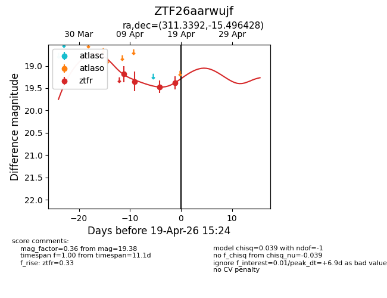
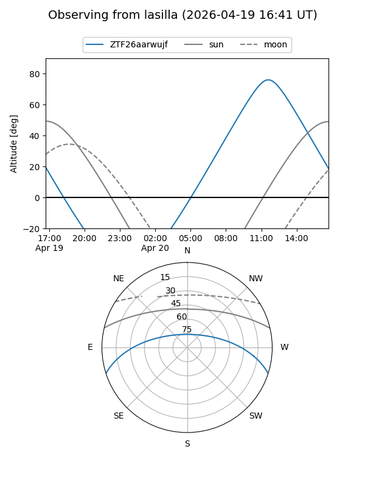
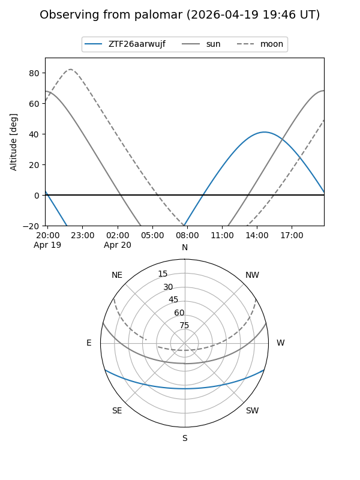
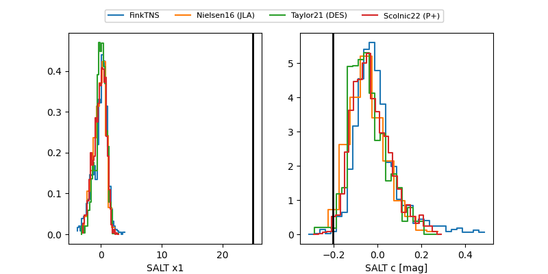

ZTF26aarwujf
Target ZTF26aarwujf at 2026-04-19 15:35
Aliases and brokers:
FINK: link
Lasair: link
ALeRCE: link
alt names
ZTF26aarwujf (ztf,fink_ztf)
Coordinates:
equatorial (ra, dec) = 311.3392,-15.49643
equatorial (HMS+DMS) = 20:45:21.41,-15:29:47.14
galactic (l, b) = (31.0214,-32.05884)
Flags:
Photometry:
last ztfr=19.38
4 ztfr detections
Lightcurve

Visibility


Additional plots
